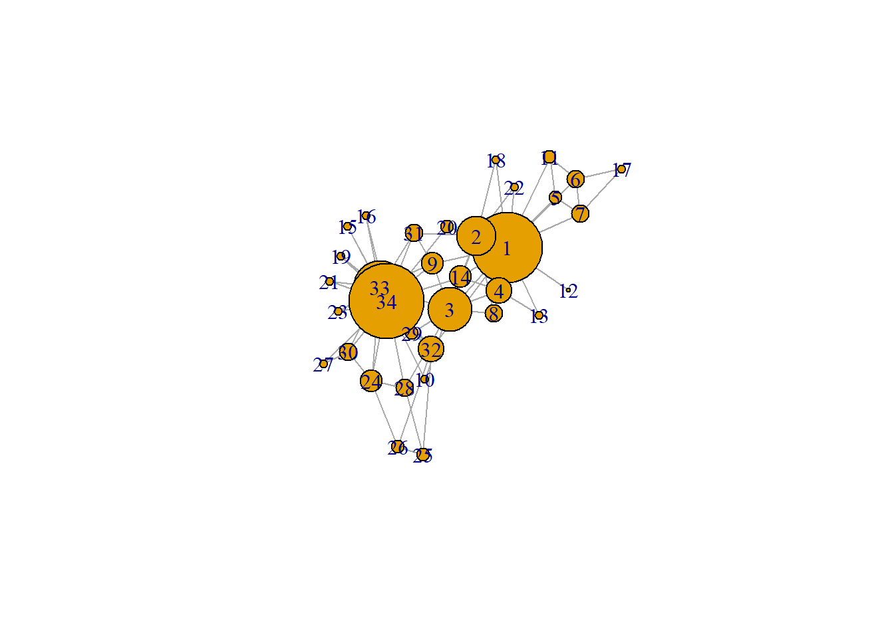
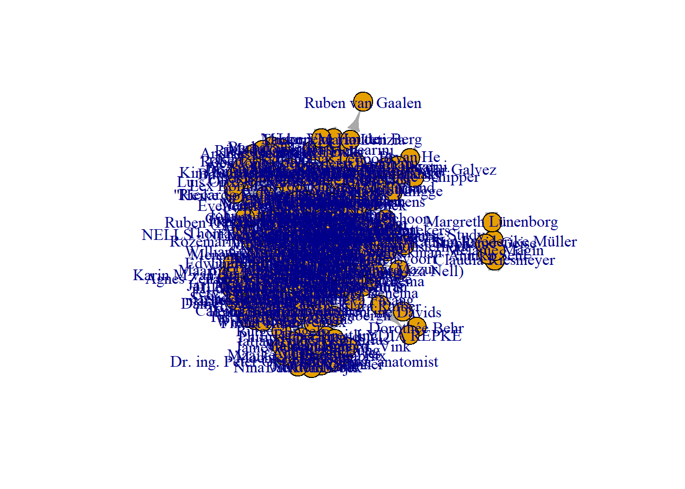
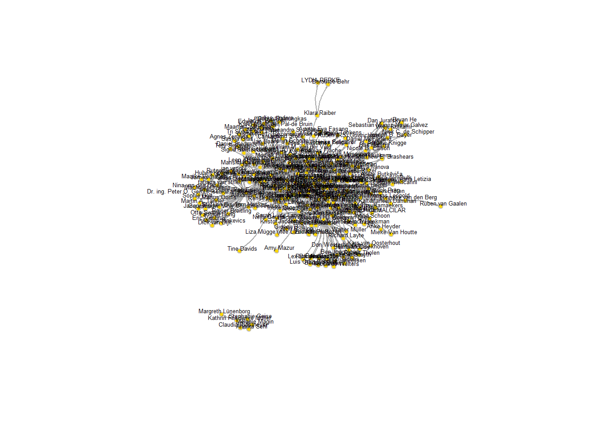
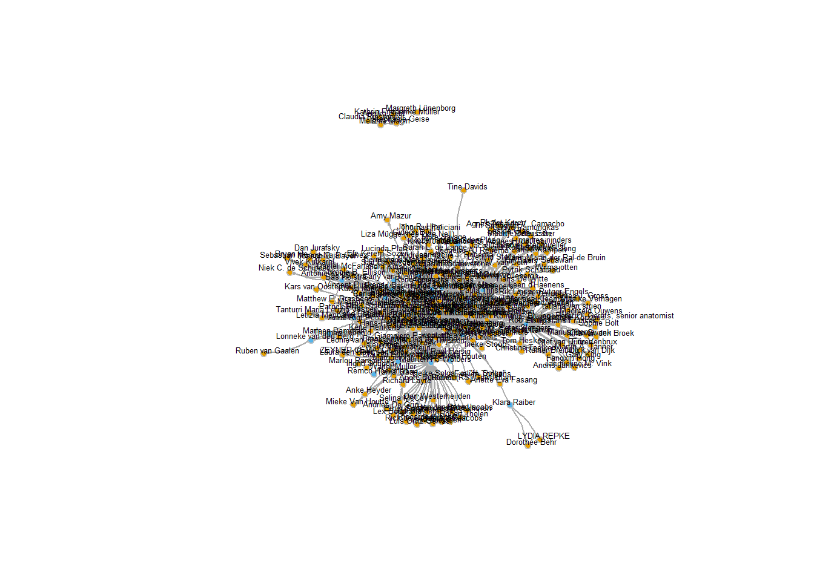
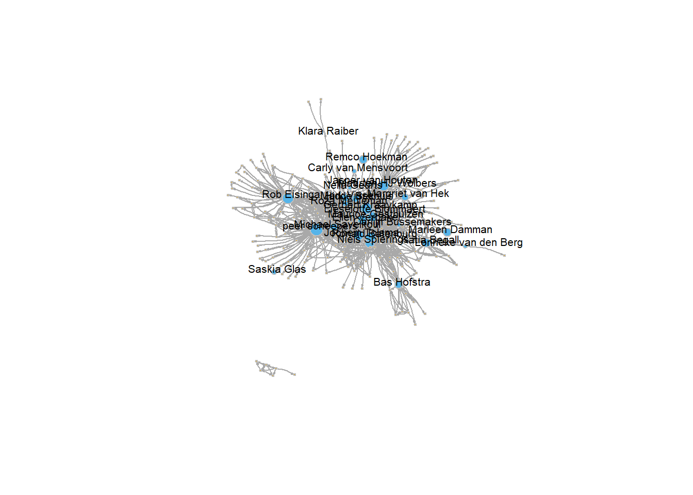
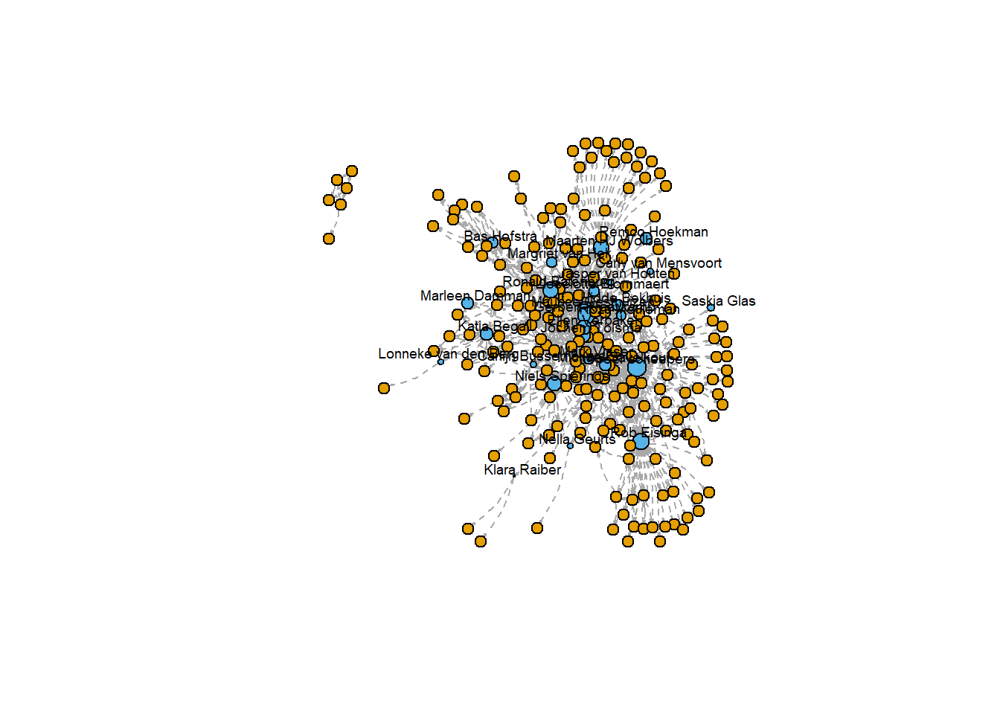
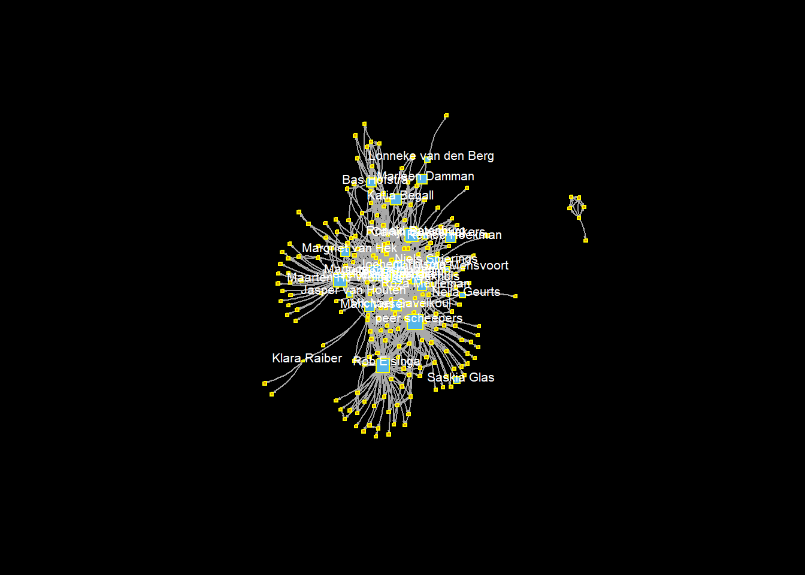

#install.packages("igraph")
require(igraph)
g <- make_graph("Zachary")
plot(g)
gmat <- as_adjacency_matrix(g, type = "both", sparse = FALSE)
gmat## [,1] [,2] [,3] [,4] [,5] [,6] [,7] [,8] [,9] [,10] [,11] [,12] [,13] [,14] [,15] [,16] [,17]
## [1,] 0 1 1 1 1 1 1 1 1 0 1 1 1 1 0 0 0
## [2,] 1 0 1 1 0 0 0 1 0 0 0 0 0 1 0 0 0
## [3,] 1 1 0 1 0 0 0 1 1 1 0 0 0 1 0 0 0
## [4,] 1 1 1 0 0 0 0 1 0 0 0 0 1 1 0 0 0
## [5,] 1 0 0 0 0 0 1 0 0 0 1 0 0 0 0 0 0
## [6,] 1 0 0 0 0 0 1 0 0 0 1 0 0 0 0 0 1
## [7,] 1 0 0 0 1 1 0 0 0 0 0 0 0 0 0 0 1
## [8,] 1 1 1 1 0 0 0 0 0 0 0 0 0 0 0 0 0
## [9,] 1 0 1 0 0 0 0 0 0 0 0 0 0 0 0 0 0
## [10,] 0 0 1 0 0 0 0 0 0 0 0 0 0 0 0 0 0
## [11,] 1 0 0 0 1 1 0 0 0 0 0 0 0 0 0 0 0
## [12,] 1 0 0 0 0 0 0 0 0 0 0 0 0 0 0 0 0
## [13,] 1 0 0 1 0 0 0 0 0 0 0 0 0 0 0 0 0
## [14,] 1 1 1 1 0 0 0 0 0 0 0 0 0 0 0 0 0
## [15,] 0 0 0 0 0 0 0 0 0 0 0 0 0 0 0 0 0
## [16,] 0 0 0 0 0 0 0 0 0 0 0 0 0 0 0 0 0
## [17,] 0 0 0 0 0 1 1 0 0 0 0 0 0 0 0 0 0
## [18,] 1 1 0 0 0 0 0 0 0 0 0 0 0 0 0 0 0
## [19,] 0 0 0 0 0 0 0 0 0 0 0 0 0 0 0 0 0
## [20,] 1 1 0 0 0 0 0 0 0 0 0 0 0 0 0 0 0
## [21,] 0 0 0 0 0 0 0 0 0 0 0 0 0 0 0 0 0
## [22,] 1 1 0 0 0 0 0 0 0 0 0 0 0 0 0 0 0
## [23,] 0 0 0 0 0 0 0 0 0 0 0 0 0 0 0 0 0
## [24,] 0 0 0 0 0 0 0 0 0 0 0 0 0 0 0 0 0
## [25,] 0 0 0 0 0 0 0 0 0 0 0 0 0 0 0 0 0
## [26,] 0 0 0 0 0 0 0 0 0 0 0 0 0 0 0 0 0
## [27,] 0 0 0 0 0 0 0 0 0 0 0 0 0 0 0 0 0
## [28,] 0 0 1 0 0 0 0 0 0 0 0 0 0 0 0 0 0
## [29,] 0 0 1 0 0 0 0 0 0 0 0 0 0 0 0 0 0
## [30,] 0 0 0 0 0 0 0 0 0 0 0 0 0 0 0 0 0
## [31,] 0 1 0 0 0 0 0 0 1 0 0 0 0 0 0 0 0
## [32,] 1 0 0 0 0 0 0 0 0 0 0 0 0 0 0 0 0
## [33,] 0 0 1 0 0 0 0 0 1 0 0 0 0 0 1 1 0
## [34,] 0 0 0 0 0 0 0 0 1 1 0 0 0 1 1 1 0
## [,18] [,19] [,20] [,21] [,22] [,23] [,24] [,25] [,26] [,27] [,28] [,29] [,30] [,31] [,32]
## [1,] 1 0 1 0 1 0 0 0 0 0 0 0 0 0 1
## [2,] 1 0 1 0 1 0 0 0 0 0 0 0 0 1 0
## [3,] 0 0 0 0 0 0 0 0 0 0 1 1 0 0 0
## [4,] 0 0 0 0 0 0 0 0 0 0 0 0 0 0 0
## [5,] 0 0 0 0 0 0 0 0 0 0 0 0 0 0 0
## [6,] 0 0 0 0 0 0 0 0 0 0 0 0 0 0 0
## [7,] 0 0 0 0 0 0 0 0 0 0 0 0 0 0 0
## [8,] 0 0 0 0 0 0 0 0 0 0 0 0 0 0 0
## [9,] 0 0 0 0 0 0 0 0 0 0 0 0 0 1 0
## [10,] 0 0 0 0 0 0 0 0 0 0 0 0 0 0 0
## [11,] 0 0 0 0 0 0 0 0 0 0 0 0 0 0 0
## [12,] 0 0 0 0 0 0 0 0 0 0 0 0 0 0 0
## [13,] 0 0 0 0 0 0 0 0 0 0 0 0 0 0 0
## [14,] 0 0 0 0 0 0 0 0 0 0 0 0 0 0 0
## [15,] 0 0 0 0 0 0 0 0 0 0 0 0 0 0 0
## [16,] 0 0 0 0 0 0 0 0 0 0 0 0 0 0 0
## [17,] 0 0 0 0 0 0 0 0 0 0 0 0 0 0 0
## [18,] 0 0 0 0 0 0 0 0 0 0 0 0 0 0 0
## [19,] 0 0 0 0 0 0 0 0 0 0 0 0 0 0 0
## [20,] 0 0 0 0 0 0 0 0 0 0 0 0 0 0 0
## [21,] 0 0 0 0 0 0 0 0 0 0 0 0 0 0 0
## [22,] 0 0 0 0 0 0 0 0 0 0 0 0 0 0 0
## [23,] 0 0 0 0 0 0 0 0 0 0 0 0 0 0 0
## [24,] 0 0 0 0 0 0 0 0 1 0 1 0 1 0 0
## [25,] 0 0 0 0 0 0 0 0 1 0 1 0 0 0 1
## [26,] 0 0 0 0 0 0 1 1 0 0 0 0 0 0 1
## [27,] 0 0 0 0 0 0 0 0 0 0 0 0 1 0 0
## [28,] 0 0 0 0 0 0 1 1 0 0 0 0 0 0 0
## [29,] 0 0 0 0 0 0 0 0 0 0 0 0 0 0 1
## [30,] 0 0 0 0 0 0 1 0 0 1 0 0 0 0 0
## [31,] 0 0 0 0 0 0 0 0 0 0 0 0 0 0 0
## [32,] 0 0 0 0 0 0 0 1 1 0 0 1 0 0 0
## [33,] 0 1 0 1 0 1 1 0 0 0 0 0 1 1 1
## [34,] 0 1 1 1 0 1 1 0 0 1 1 1 1 1 1
## [,33] [,34]
## [1,] 0 0
## [2,] 0 0
## [3,] 1 0
## [4,] 0 0
## [5,] 0 0
## [6,] 0 0
## [7,] 0 0
## [8,] 0 0
## [9,] 1 1
## [10,] 0 1
## [11,] 0 0
## [12,] 0 0
## [13,] 0 0
## [14,] 0 1
## [15,] 1 1
## [16,] 1 1
## [17,] 0 0
## [18,] 0 0
## [19,] 1 1
## [20,] 0 1
## [21,] 1 1
## [22,] 0 0
## [23,] 1 1
## [24,] 1 1
## [25,] 0 0
## [26,] 0 0
## [27,] 0 1
## [28,] 0 1
## [29,] 0 1
## [30,] 1 1
## [31,] 1 1
## [32,] 1 1
## [33,] 0 1
## [34,] 1 0vcount(g)## [1] 34ecount(g)## [1] 78degree(g)## [1] 16 9 10 6 3 4 4 4 5 2 3 1 2 5 2 2 2 2 2 3 2 2 2 5 3 3 2 4 3 4 4 6
## [33] 12 17hist(table(degree(g)), xlab='indegree', main= 'Histogram of indegree')
# be aware that directed graphs are considered as undirected. but g is undirected.
transitivity(g, type = c("localundirected"), isolates = c("NaN", "zero"))## [1] 0.1500000 0.3333333 0.2444444 0.6666667 0.6666667 0.5000000 0.5000000 1.0000000 0.5000000
## [10] 0.0000000 0.6666667 NaN 1.0000000 0.6000000 1.0000000 1.0000000 1.0000000 1.0000000
## [19] 1.0000000 0.3333333 1.0000000 1.0000000 1.0000000 0.4000000 0.3333333 0.3333333 1.0000000
## [28] 0.1666667 0.3333333 0.6666667 0.5000000 0.2000000 0.1969697 0.1102941dyad.census(g)## $mut
## [1] 78
##
## $asym
## [1] 0
##
## $null
## [1] 483#install.packages("sna")
igraph::triad.census(g)## Warning in igraph::triad.census(g): At core/misc/motifs.c:1165 : Triad census called on an
## undirected graph.## [1] 3971 0 1575 0 0 0 0 0 0 0 393 0 0 0 0 45# I will use sna because it shows the names of the triads as well.
sna::triad.census(gmat)## 003 012 102 021D 021U 021C 111D 111U 030T 030C 201 120D 120U 120C 210 300
## [1,] 3971 0 1575 0 0 0 0 0 0 0 393 0 0 0 0 45# changing V
V(g)$size = degree(g)*3
plot(g, mode = "undirected")
g## IGRAPH bbf0054 U--- 34 78 -- Zachary
## + attr: name (g/c), size (v/n)
## + edges from bbf0054:
## [1] 1-- 2 1-- 3 1-- 4 1-- 5 1-- 6 1-- 7 1-- 8 1-- 9 1--11 1--12 1--13 1--14 1--18
## [14] 1--20 1--22 1--32 2-- 3 2-- 4 2-- 8 2--14 2--18 2--20 2--22 2--31 3-- 4 3-- 8
## [27] 3--28 3--29 3--33 3--10 3-- 9 3--14 4-- 8 4--13 4--14 5-- 7 5--11 6-- 7 6--11
## [40] 6--17 7--17 9--31 9--33 9--34 10--34 14--34 15--33 15--34 16--33 16--34 19--33 19--34
## [53] 20--34 21--33 21--34 23--33 23--34 24--26 24--28 24--33 24--34 24--30 25--26 25--28 25--32
## [66] 26--32 27--30 27--34 28--34 29--32 29--34 30--33 30--34 31--33 31--34 32--33 32--34 33--34summary(g)## IGRAPH bbf0054 U--- 34 78 -- Zachary
## + attr: name (g/c), size (v/n)head(g)## 6 x 34 sparse Matrix of class "dgCMatrix"
##
## [1,] . 1 1 1 1 1 1 1 1 . 1 1 1 1 . . . 1 . 1 . 1 . . . . . . . . . 1 . .
## [2,] 1 . 1 1 . . . 1 . . . . . 1 . . . 1 . 1 . 1 . . . . . . . . 1 . . .
## [3,] 1 1 . 1 . . . 1 1 1 . . . 1 . . . . . . . . . . . . . 1 1 . . . 1 .
## [4,] 1 1 1 . . . . 1 . . . . 1 1 . . . . . . . . . . . . . . . . . . . .
## [5,] 1 . . . . . 1 . . . 1 . . . . . . . . . . . . . . . . . . . . . . .
## [6,] 1 . . . . . 1 . . . 1 . . . . . 1 . . . . . . . . . . . . . . . . .# start with clean workspace
rm(list = ls())load("./data/soc_df.RData")
load("./data/soc_collabs1.RData")
load("./data/soc_collabs2.RData")structure ("soc_df.RData")## [1] "soc_df.RData"summary ("soc_df.RData")## Length Class Mode
## 1 character character# co-authors networks
# get unique collaborators of soc staff first, zodat je niet iemand dubbel hebt. Alle mensen verzamelen, dus staffleden sociologie en alle co-auteurs.
soc_collabs_unique <- unique(soc_collabs[, 4]) # so 230 unique collaborators for RU staff?
summary(soc_collabs_unique)## Length Class Mode
## 230 character charactersoc_collabs_unique <- c(soc_collabs_unique, soc_df$gs_id) # add the soc staff themselves.New people who have not worked together with others.
soc_collabs_unique <- data.frame(soc_collabs_unique)
soc_collabs_unique$v1 <- 1 # convenient to select on after the merge
soc_collabs_unique <- unique(soc_collabs_unique)
# so this is a very important step, we join the unique soc collaborators to the collaborators of
# collaborators
require(tidyverse)
onefivedegree <- left_join(collabs_1deep, soc_collabs_unique, by = c(coauth_id = "soc_collabs_unique"))
# Then, we drop those that are not among sociology collaborators and who don't lsit coauthors
# regardless
onefivedegree <- onefivedegree[!is.na(onefivedegree$v1), ]
onefivedegree <- onefivedegree[!is.na(onefivedegree$coauth), ]
# we pick those columns and have an edgelist of soc collaborators and whether they collaborate with
# those same collaborators the 1.5 degree network
onefivedegree <- onefivedegree[, c("name", "coauth")]
names(onefivedegree) <- c("from", "to")
# we get soc collaborators and add those to the data above and end up with a nice edgelist!
socc <- soc_collabs[!is.na(soc_collabs$coauth), ]
socc <- socc[, c("name", "coauth")]
names(socc) <- c("from", "to")
onefivedegree <- rbind(socc, onefivedegree)
save(onefivedegree, file = "Data/soc_onefivedegree.RData")#plotting it.
onefivedegree <- as.matrix(onefivedegree) # matrix because igraph wants that
library(igraph) # Notice that we call igraph here, in anticipation of the viz tutorial.
net1 <- graph_from_edgelist(onefivedegree, directed = TRUE) # Notice the igraph function here!
plot(net1) # pretty ugly!
#making it prettier
plot(net1 ,
vertex.color = "gold", # nice color for the vertices
vertex.size = 4, # we'll vertices a bit smaller
vertex.frame.color = "gray", # we'll put a gray frame around vertices
vertex.label.color = "black", # not that ugly blue color for the labels (names)
vertex.label.family = "Helvetica", # not a fan of times new roman in figures
vertex.label.cex = 0.4, # make the label a bit smaller too
vertex.label.dist = 0.5, # we'll pull the labels a bit away from the vertices
edge.curved = 0.2, # curved edges is always a nice touch
edge.arrow.size = 0.1) # make arrow size (direction of edge) smaller## Warning in text.default(x, y, labels = labels, col = label.color, family = label.family, : font
## family not found in Windows font database
#single out staff members.
#gather the vertices in the network object as data frame
in_network <- data.frame(as_ids(V(net1)))
names(in_network)[1] <- "name"
#soc_df$total_cites <- soc_df$total_cites.x
# collect the Radboud sociology nodes from the soc_df data frame
ru_nodes <- soc_df[, c("name", "total_cites")]
# join with the in_network dataset and put some different color label on those nodes who were in the soc_df and those who were not.
in_network <- left_join(in_network, ru_nodes, by = c("name" = "name"))
in_network$vcol <- ifelse(is.na(in_network$total_cites), "#E69F00", "#56B4E9")
plot(net1,
vertex.color = in_network$vcol, #THIS WAS WHAT WE DID THE LAST CODEBLOCK FOR!
vertex.size = 4, # we'll make them a bit smaller
vertex.frame.color = "gray", # we'll put a frame around it
vertex.label.color = "black", # not that ugly blue color for the names
vertex.label.family = "Helvetica", # not a fan of times in figures
vertex.label.cex = 0.4, # a bit smaller too
vertex.label.dist = 0.5, # we'll pull the labels a bit away from the vertices
edge.curved = 0.2, # curved edges is always a nice tough
edge.arrow.size = 0.1) # arrow size smaller## Warning in text.default(x, y, labels = labels, col = label.color, family = label.family, : font
## family not found in Windows font database
#show only the labels of RU sociology staff.
plot(net1,
vertex.color = in_network$vcol,
#NOTICE THESE CONDITIONAL STATEMENTS BELOW
vertex.label = ifelse(!is.na(in_network$total_cites), in_network$name, NA),
vertex.size = 4, # we'll make them a bit smaller
vertex.frame.color = "gray", # we'll put a frame around it
vertex.label.color = "black", # not that ugly blue color for the names
vertex.label.family = "Helvetica", # not a fan of times in figures
vertex.label.cex = 0.65, # a bit smaller too
vertex.label.dist = 0.5, # we'll pull the labels a bit away from the vertices
edge.curved = 0.2, # curved edges is always a nice tough
edge.arrow.size = 0.1) # arrow size smaller## Warning in text.default(x, y, labels = labels, col = label.color, family = label.family, : font
## family not found in Windows font database#Vertex size adjusted for citation
plot(net1,
vertex.color = in_network$vcol,
vertex.label = ifelse(!is.na(in_network$total_cites), in_network$name, NA),
# SAME HERE, TRY TO SMOOTH THE TOTAL_CITES A BIT WITH LOGSCALE
vertex.size = ifelse(!is.na(in_network$total_cites), log(in_network$total_cites), 2),
vertex.frame.color = "gray", # we'll put a frame around it
vertex.label.color = "black", # not that ugly blue color for the names
vertex.label.family = "Helvetica", # not a fan of times in figures
vertex.label.cex = 0.65, # a bit smaller too
vertex.label.dist = 0.5, # we'll pull the labels a bit away from the vertices
edge.curved = 0.2, # curved edges is always a nice tough
edge.arrow.size = 0.1) # arrow size smaller## Warning in text.default(x, y, labels = labels, col = label.color, family = label.family, : font
## family not found in Windows font database
#New lay-out
#Vertex size adjusted for citation
plot(net1,
vertex.color = in_network$vcol,
vertex.shapes = c("square"),
vertex.label = ifelse(!is.na(in_network$total_cites), in_network$name, NA),
# SAME HERE, TRY TO SMOOTH THE TOTAL_CITES A BIT WITH LOGSCALE
vertex.size = ifelse(!is.na(in_network$total_cites), log(in_network$total_cites), 6),
vertex.frame.color = "black", # we'll put a frame around it
vertex.label.color = "black", # not that ugly blue color for the names
vertex.arrow.color = "black",
vertex.label.family = "Helvetica", # not a fan of times in figures
vertex.label.cex = 0.6, # a bit smaller too
vertex.label.dist = 0.8, # we'll pull the labels a bit away from the vertices
edge.curved = 0.2, # curved edges is always a nice tough
edge.lty=c("dashed"),
edge.arrow.size = 0.1) # arrow size smaller## Warning in text.default(x, y, labels = labels, col = label.color, family = label.family, : font
## family not found in Windows font database
#Changing the lay-out further
#Vertex size adjusted for citation
par(bg="black")
plot(net1,
vertex.color = in_network$vcol,
vertex.label = ifelse(!is.na(in_network$total_cites), in_network$name, NA),
# SAME HERE, TRY TO SMOOTH THE TOTAL_CITES A BIT WITH LOGSCALE
vertex.size = ifelse(!is.na(in_network$total_cites), log(in_network$total_cites), 2),
vertex.frame.color = "yellow", # we'll put a frame around it
vertex.label.color = "white", # not that ugly blue color for the names
vertex.label.family = "Helvetica", # not a fan of times in figures
vertex.shape="square",
vertex.label.cex = 0.65, # a bit smaller too
vertex.label.dist = 0.5, # we'll pull the labels a bit away from the vertices
edge.curved = 0.2, # curved edges is always a nice tough
edge.arrow.size = 0.1) # arrow size smaller## Warning in text.default(x, y, labels = labels, col = label.color, family = label.family, : font
## family not found in Windows font database
YGBge3J9DQojaW5zdGFsbC5wYWNrYWdlcygiaWdyYXBoIikNCg0KcmVxdWlyZShpZ3JhcGgpDQpnIDwtIG1ha2VfZ3JhcGgoIlphY2hhcnkiKQ0KcGxvdChnKQ0KYGBgDQoNCmBgYHtyfQ0KZ21hdCA8LSBhc19hZGphY2VuY3lfbWF0cml4KGcsIHR5cGUgPSAiYm90aCIsIHNwYXJzZSA9IEZBTFNFKQ0KZ21hdA0KYGBgDQoNCmBgYHtyfQ0KdmNvdW50KGcpDQplY291bnQoZykNCmBgYA0KDQpgYGB7cn0NCmRlZ3JlZShnKQ0KaGlzdCh0YWJsZShkZWdyZWUoZykpLCB4bGFiPSdpbmRlZ3JlZScsIG1haW49ICdIaXN0b2dyYW0gb2YgaW5kZWdyZWUnKQ0KYGBgDQoNCmBgYHtyfQ0KIyBiZSBhd2FyZSB0aGF0IGRpcmVjdGVkIGdyYXBocyBhcmUgY29uc2lkZXJlZCBhcyB1bmRpcmVjdGVkLiBidXQgZyBpcyB1bmRpcmVjdGVkLg0KdHJhbnNpdGl2aXR5KGcsIHR5cGUgPSBjKCJsb2NhbHVuZGlyZWN0ZWQiKSwgaXNvbGF0ZXMgPSBjKCJOYU4iLCAiemVybyIpKQ0KYGBgDQoNCmBgYHtyfQ0KZHlhZC5jZW5zdXMoZykNCmBgYA0KDQpgYGB7cn0NCiNpbnN0YWxsLnBhY2thZ2VzKCJzbmEiKQ0KaWdyYXBoOjp0cmlhZC5jZW5zdXMoZykNCiMgSSB3aWxsIHVzZSBzbmEgYmVjYXVzZSBpdCBzaG93cyB0aGUgbmFtZXMgb2YgdGhlIHRyaWFkcyBhcyB3ZWxsLg0Kc25hOjp0cmlhZC5jZW5zdXMoZ21hdCkNCmBgYA0KDQpgYGB7cn0NCiMgY2hhbmdpbmcgVg0KVihnKSRzaXplID0gZGVncmVlKGcpKjMNCnBsb3QoZywgbW9kZSA9ICJ1bmRpcmVjdGVkIikNCmBgYA0KDQpgYGB7cn0NCmcNCnN1bW1hcnkoZykNCmhlYWQoZykNCmBgYA0KDQpgYGB7cn0NCiMgc3RhcnQgd2l0aCBjbGVhbiB3b3Jrc3BhY2UNCnJtKGxpc3QgPSBscygpKQ0KYGBgDQoNCg0KYGBge3J9DQpsb2FkKCIuL2RhdGEvc29jX2RmLlJEYXRhIikNCmxvYWQoIi4vZGF0YS9zb2NfY29sbGFiczEuUkRhdGEiKQ0KbG9hZCgiLi9kYXRhL3NvY19jb2xsYWJzMi5SRGF0YSIpDQpgYGANCg0KYGBge3J9DQpzdHJ1Y3R1cmUgKCJzb2NfZGYuUkRhdGEiKQ0Kc3VtbWFyeSAoInNvY19kZi5SRGF0YSIpDQpgYGANCg0KYGBge3J9DQojIGNvLWF1dGhvcnMgbmV0d29ya3MNCg0KDQojIGdldCB1bmlxdWUgY29sbGFib3JhdG9ycyBvZiBzb2Mgc3RhZmYgZmlyc3QsIHpvZGF0IGplIG5pZXQgaWVtYW5kIGR1YmJlbCBoZWJ0LiBBbGxlIG1lbnNlbiB2ZXJ6YW1lbGVuLCBkdXMgc3RhZmZsZWRlbiBzb2Npb2xvZ2llIGVuIGFsbGUgY28tYXV0ZXVycy4NCnNvY19jb2xsYWJzX3VuaXF1ZSA8LSB1bmlxdWUoc29jX2NvbGxhYnNbLCA0XSkgICMgc28gMjMwIHVuaXF1ZSBjb2xsYWJvcmF0b3JzIGZvciBSVSBzdGFmZj8NCnN1bW1hcnkoc29jX2NvbGxhYnNfdW5pcXVlKQ0Kc29jX2NvbGxhYnNfdW5pcXVlIDwtIGMoc29jX2NvbGxhYnNfdW5pcXVlLCBzb2NfZGYkZ3NfaWQpICAjIGFkZCB0aGUgc29jIHN0YWZmIHRoZW1zZWx2ZXMuTmV3IHBlb3BsZSB3aG8gaGF2ZSBub3Qgd29ya2VkIHRvZ2V0aGVyIHdpdGggb3RoZXJzLg0Kc29jX2NvbGxhYnNfdW5pcXVlIDwtIGRhdGEuZnJhbWUoc29jX2NvbGxhYnNfdW5pcXVlKQ0Kc29jX2NvbGxhYnNfdW5pcXVlJHYxIDwtIDEgICMgY29udmVuaWVudCB0byBzZWxlY3Qgb24gYWZ0ZXIgdGhlIG1lcmdlDQpzb2NfY29sbGFic191bmlxdWUgPC0gdW5pcXVlKHNvY19jb2xsYWJzX3VuaXF1ZSkNCg0KIyBzbyB0aGlzIGlzIGEgdmVyeSBpbXBvcnRhbnQgc3RlcCwgd2Ugam9pbiB0aGUgdW5pcXVlIHNvYyBjb2xsYWJvcmF0b3JzIHRvIHRoZSBjb2xsYWJvcmF0b3JzIG9mDQojIGNvbGxhYm9yYXRvcnMNCnJlcXVpcmUodGlkeXZlcnNlKQ0Kb25lZml2ZWRlZ3JlZSA8LSBsZWZ0X2pvaW4oY29sbGFic18xZGVlcCwgc29jX2NvbGxhYnNfdW5pcXVlLCBieSA9IGMoY29hdXRoX2lkID0gInNvY19jb2xsYWJzX3VuaXF1ZSIpKQ0KDQojIFRoZW4sIHdlIGRyb3AgdGhvc2UgdGhhdCBhcmUgbm90IGFtb25nIHNvY2lvbG9neSBjb2xsYWJvcmF0b3JzIGFuZCB3aG8gZG9uJ3QgbHNpdCBjb2F1dGhvcnMNCiMgcmVnYXJkbGVzcw0Kb25lZml2ZWRlZ3JlZSA8LSBvbmVmaXZlZGVncmVlWyFpcy5uYShvbmVmaXZlZGVncmVlJHYxKSwgXQ0Kb25lZml2ZWRlZ3JlZSA8LSBvbmVmaXZlZGVncmVlWyFpcy5uYShvbmVmaXZlZGVncmVlJGNvYXV0aCksIF0NCg0KIyB3ZSBwaWNrIHRob3NlIGNvbHVtbnMgYW5kIGhhdmUgYW4gZWRnZWxpc3Qgb2Ygc29jIGNvbGxhYm9yYXRvcnMgYW5kIHdoZXRoZXIgdGhleSBjb2xsYWJvcmF0ZSB3aXRoDQojIHRob3NlIHNhbWUgY29sbGFib3JhdG9ycyB0aGUgMS41IGRlZ3JlZSBuZXR3b3JrDQpvbmVmaXZlZGVncmVlIDwtIG9uZWZpdmVkZWdyZWVbLCBjKCJuYW1lIiwgImNvYXV0aCIpXQ0KbmFtZXMob25lZml2ZWRlZ3JlZSkgPC0gYygiZnJvbSIsICJ0byIpDQoNCiMgd2UgZ2V0IHNvYyBjb2xsYWJvcmF0b3JzIGFuZCBhZGQgdGhvc2UgdG8gdGhlIGRhdGEgYWJvdmUgYW5kIGVuZCB1cCB3aXRoIGEgbmljZSBlZGdlbGlzdCENCnNvY2MgPC0gc29jX2NvbGxhYnNbIWlzLm5hKHNvY19jb2xsYWJzJGNvYXV0aCksIF0NCnNvY2MgPC0gc29jY1ssIGMoIm5hbWUiLCAiY29hdXRoIildDQpuYW1lcyhzb2NjKSA8LSBjKCJmcm9tIiwgInRvIikNCm9uZWZpdmVkZWdyZWUgPC0gcmJpbmQoc29jYywgb25lZml2ZWRlZ3JlZSkNCnNhdmUob25lZml2ZWRlZ3JlZSwgZmlsZSA9ICJEYXRhL3NvY19vbmVmaXZlZGVncmVlLlJEYXRhIikNCmBgYA0KDQpgYGB7cn0NCiNwbG90dGluZyBpdC4NCm9uZWZpdmVkZWdyZWUgPC0gYXMubWF0cml4KG9uZWZpdmVkZWdyZWUpICAjIG1hdHJpeCBiZWNhdXNlIGlncmFwaCB3YW50cyB0aGF0DQpsaWJyYXJ5KGlncmFwaCkgICMgTm90aWNlIHRoYXQgd2UgY2FsbCBpZ3JhcGggaGVyZSwgaW4gYW50aWNpcGF0aW9uIG9mIHRoZSB2aXogdHV0b3JpYWwuDQpuZXQxIDwtIGdyYXBoX2Zyb21fZWRnZWxpc3Qob25lZml2ZWRlZ3JlZSwgZGlyZWN0ZWQgPSBUUlVFKSAgIyBOb3RpY2UgdGhlIGlncmFwaCBmdW5jdGlvbiBoZXJlIQ0KDQpwbG90KG5ldDEpICAjIHByZXR0eSB1Z2x5IQ0KYGBgDQoNCmBgYHtyfQ0KI21ha2luZyBpdCBwcmV0dGllcg0KcGxvdChuZXQxICwNCiAgICAgdmVydGV4LmNvbG9yID0gImdvbGQiLCAjIG5pY2UgY29sb3IgZm9yIHRoZSB2ZXJ0aWNlcw0KICAgICB2ZXJ0ZXguc2l6ZSA9IDQsICAjIHdlJ2xsIHZlcnRpY2VzIGEgYml0IHNtYWxsZXINCiAgICAgdmVydGV4LmZyYW1lLmNvbG9yID0gImdyYXkiLCAgIyB3ZSdsbCBwdXQgYSBncmF5IGZyYW1lIGFyb3VuZCB2ZXJ0aWNlcw0KICAgICB2ZXJ0ZXgubGFiZWwuY29sb3IgPSAiYmxhY2siLCAgIyBub3QgdGhhdCB1Z2x5IGJsdWUgY29sb3IgZm9yIHRoZSBsYWJlbHMgKG5hbWVzKQ0KICAgICB2ZXJ0ZXgubGFiZWwuZmFtaWx5ID0gIkhlbHZldGljYSIsICMgbm90IGEgZmFuIG9mIHRpbWVzIG5ldyByb21hbiBpbiBmaWd1cmVzDQogICAgIHZlcnRleC5sYWJlbC5jZXggPSAwLjQsICAjIG1ha2UgdGhlIGxhYmVsIGEgYml0IHNtYWxsZXIgdG9vDQogICAgIHZlcnRleC5sYWJlbC5kaXN0ID0gMC41LCAgIyB3ZSdsbCBwdWxsIHRoZSBsYWJlbHMgYSBiaXQgYXdheSBmcm9tIHRoZSB2ZXJ0aWNlcw0KICAgICBlZGdlLmN1cnZlZCA9IDAuMiwgIyBjdXJ2ZWQgZWRnZXMgaXMgYWx3YXlzIGEgbmljZSB0b3VjaA0KICAgICBlZGdlLmFycm93LnNpemUgPSAwLjEpICMgbWFrZSBhcnJvdyBzaXplIChkaXJlY3Rpb24gb2YgZWRnZSkgc21hbGxlcg0KYGBgDQoNCmBgYHtyfQ0KI3NpbmdsZSBvdXQgc3RhZmYgbWVtYmVycy4gDQoNCiNnYXRoZXIgdGhlIHZlcnRpY2VzIGluIHRoZSBuZXR3b3JrIG9iamVjdCBhcyBkYXRhIGZyYW1lDQppbl9uZXR3b3JrIDwtIGRhdGEuZnJhbWUoYXNfaWRzKFYobmV0MSkpKQ0KbmFtZXMoaW5fbmV0d29yaylbMV0gPC0gIm5hbWUiDQoNCiNzb2NfZGYkdG90YWxfY2l0ZXMgPC0gc29jX2RmJHRvdGFsX2NpdGVzLngNCiMgY29sbGVjdCB0aGUgUmFkYm91ZCBzb2Npb2xvZ3kgbm9kZXMgZnJvbSB0aGUgc29jX2RmIGRhdGEgZnJhbWUNCnJ1X25vZGVzIDwtIHNvY19kZlssIGMoIm5hbWUiLCAidG90YWxfY2l0ZXMiKV0NCiMgam9pbiB3aXRoIHRoZSBpbl9uZXR3b3JrIGRhdGFzZXQgYW5kIHB1dCBzb21lIGRpZmZlcmVudCBjb2xvciBsYWJlbCBvbiB0aG9zZSBub2RlcyB3aG8gd2VyZSBpbiB0aGUgc29jX2RmIGFuZCB0aG9zZSB3aG8gd2VyZSBub3QuDQppbl9uZXR3b3JrIDwtIGxlZnRfam9pbihpbl9uZXR3b3JrLCBydV9ub2RlcywgYnkgPSBjKCJuYW1lIiA9ICJuYW1lIikpDQppbl9uZXR3b3JrJHZjb2wgPC0gaWZlbHNlKGlzLm5hKGluX25ldHdvcmskdG90YWxfY2l0ZXMpLCAiI0U2OUYwMCIsICIjNTZCNEU5IikNCg0KcGxvdChuZXQxLA0KICAgICB2ZXJ0ZXguY29sb3IgPSBpbl9uZXR3b3JrJHZjb2wsICNUSElTIFdBUyBXSEFUIFdFIERJRCBUSEUgTEFTVCBDT0RFQkxPQ0sgRk9SIQ0KICAgICB2ZXJ0ZXguc2l6ZSA9IDQsICAjIHdlJ2xsIG1ha2UgdGhlbSBhIGJpdCBzbWFsbGVyDQogICAgIHZlcnRleC5mcmFtZS5jb2xvciA9ICJncmF5IiwgICMgd2UnbGwgcHV0IGEgZnJhbWUgYXJvdW5kIGl0DQogICAgIHZlcnRleC5sYWJlbC5jb2xvciA9ICJibGFjayIsICAjIG5vdCB0aGF0IHVnbHkgYmx1ZSBjb2xvciBmb3IgdGhlIG5hbWVzDQogICAgIHZlcnRleC5sYWJlbC5mYW1pbHkgPSAiSGVsdmV0aWNhIiwgIyBub3QgYSBmYW4gb2YgdGltZXMgaW4gZmlndXJlcw0KICAgICB2ZXJ0ZXgubGFiZWwuY2V4ID0gMC40LCAgIyBhIGJpdCBzbWFsbGVyIHRvbw0KICAgICB2ZXJ0ZXgubGFiZWwuZGlzdCA9IDAuNSwgICMgd2UnbGwgcHVsbCB0aGUgbGFiZWxzIGEgYml0IGF3YXkgZnJvbSB0aGUgdmVydGljZXMNCiAgICAgZWRnZS5jdXJ2ZWQgPSAwLjIsICAjIGN1cnZlZCBlZGdlcyBpcyBhbHdheXMgYSBuaWNlIHRvdWdoDQogICAgIGVkZ2UuYXJyb3cuc2l6ZSA9IDAuMSkgIyBhcnJvdyBzaXplIHNtYWxsZXINCg0KDQpgYGANCg0KYGBge3J9DQojc2hvdyBvbmx5IHRoZSBsYWJlbHMgb2YgUlUgc29jaW9sb2d5IHN0YWZmLg0KcGxvdChuZXQxLA0KICAgICB2ZXJ0ZXguY29sb3IgPSBpbl9uZXR3b3JrJHZjb2wsIA0KICAgICAjTk9USUNFIFRIRVNFIENPTkRJVElPTkFMIFNUQVRFTUVOVFMgQkVMT1cNCiAgICAgdmVydGV4LmxhYmVsID0gaWZlbHNlKCFpcy5uYShpbl9uZXR3b3JrJHRvdGFsX2NpdGVzKSwgaW5fbmV0d29yayRuYW1lLCBOQSksDQogICAgIHZlcnRleC5zaXplID0gNCwgICMgd2UnbGwgbWFrZSB0aGVtIGEgYml0IHNtYWxsZXINCiAgICAgdmVydGV4LmZyYW1lLmNvbG9yID0gImdyYXkiLCAgIyB3ZSdsbCBwdXQgYSBmcmFtZSBhcm91bmQgaXQNCiAgICAgdmVydGV4LmxhYmVsLmNvbG9yID0gImJsYWNrIiwgICMgbm90IHRoYXQgdWdseSBibHVlIGNvbG9yIGZvciB0aGUgbmFtZXMNCiAgICAgdmVydGV4LmxhYmVsLmZhbWlseSA9ICJIZWx2ZXRpY2EiLCAjIG5vdCBhIGZhbiBvZiB0aW1lcyBpbiBmaWd1cmVzDQogICAgIHZlcnRleC5sYWJlbC5jZXggPSAwLjY1LCAgIyBhIGJpdCBzbWFsbGVyIHRvbw0KICAgICB2ZXJ0ZXgubGFiZWwuZGlzdCA9IDAuNSwgICMgd2UnbGwgcHVsbCB0aGUgbGFiZWxzIGEgYml0IGF3YXkgZnJvbSB0aGUgdmVydGljZXMNCiAgICAgZWRnZS5jdXJ2ZWQgPSAwLjIsICMgY3VydmVkIGVkZ2VzIGlzIGFsd2F5cyBhIG5pY2UgdG91Z2gNCiAgICAgZWRnZS5hcnJvdy5zaXplID0gMC4xKSAjIGFycm93IHNpemUgc21hbGxlcg0KYGBgDQoNCmBgYHtyfQ0KI1ZlcnRleCBzaXplIGFkanVzdGVkIGZvciBjaXRhdGlvbg0KcGxvdChuZXQxLA0KICAgICB2ZXJ0ZXguY29sb3IgPSBpbl9uZXR3b3JrJHZjb2wsIA0KICAgICB2ZXJ0ZXgubGFiZWwgPSBpZmVsc2UoIWlzLm5hKGluX25ldHdvcmskdG90YWxfY2l0ZXMpLCBpbl9uZXR3b3JrJG5hbWUsIE5BKSwNCiAgICAgIyBTQU1FIEhFUkUsIFRSWSBUTyBTTU9PVEggVEhFIFRPVEFMX0NJVEVTIEEgQklUIFdJVEggTE9HU0NBTEUNCiAgICAgdmVydGV4LnNpemUgPSBpZmVsc2UoIWlzLm5hKGluX25ldHdvcmskdG90YWxfY2l0ZXMpLCBsb2coaW5fbmV0d29yayR0b3RhbF9jaXRlcyksIDIpLA0KICAgICB2ZXJ0ZXguZnJhbWUuY29sb3IgPSAiZ3JheSIsICAjIHdlJ2xsIHB1dCBhIGZyYW1lIGFyb3VuZCBpdA0KICAgICB2ZXJ0ZXgubGFiZWwuY29sb3IgPSAiYmxhY2siLCAgIyBub3QgdGhhdCB1Z2x5IGJsdWUgY29sb3IgZm9yIHRoZSBuYW1lcw0KICAgICB2ZXJ0ZXgubGFiZWwuZmFtaWx5ID0gIkhlbHZldGljYSIsICMgbm90IGEgZmFuIG9mIHRpbWVzIGluIGZpZ3VyZXMNCiAgICAgdmVydGV4LmxhYmVsLmNleCA9IDAuNjUsICAjIGEgYml0IHNtYWxsZXIgdG9vDQogICAgIHZlcnRleC5sYWJlbC5kaXN0ID0gMC41LCAgIyB3ZSdsbCBwdWxsIHRoZSBsYWJlbHMgYSBiaXQgYXdheSBmcm9tIHRoZSB2ZXJ0aWNlcw0KICAgICBlZGdlLmN1cnZlZCA9IDAuMiwgIyBjdXJ2ZWQgZWRnZXMgaXMgYWx3YXlzIGEgbmljZSB0b3VnaA0KICAgICBlZGdlLmFycm93LnNpemUgPSAwLjEpICMgYXJyb3cgc2l6ZSBzbWFsbGVyDQpgYGANCg0KYGBge3J9DQojTmV3IGxheS1vdXQNCiNWZXJ0ZXggc2l6ZSBhZGp1c3RlZCBmb3IgY2l0YXRpb24NCnBsb3QobmV0MSwNCiAgICAgdmVydGV4LmNvbG9yID0gaW5fbmV0d29yayR2Y29sLA0KICAgICB2ZXJ0ZXguc2hhcGVzID0gYygic3F1YXJlIiksDQogICAgIHZlcnRleC5sYWJlbCA9IGlmZWxzZSghaXMubmEoaW5fbmV0d29yayR0b3RhbF9jaXRlcyksIGluX25ldHdvcmskbmFtZSwgTkEpLA0KICAgICAjIFNBTUUgSEVSRSwgVFJZIFRPIFNNT09USCBUSEUgVE9UQUxfQ0lURVMgQSBCSVQgV0lUSCBMT0dTQ0FMRQ0KICAgICB2ZXJ0ZXguc2l6ZSA9IGlmZWxzZSghaXMubmEoaW5fbmV0d29yayR0b3RhbF9jaXRlcyksIGxvZyhpbl9uZXR3b3JrJHRvdGFsX2NpdGVzKSwgNiksDQogICAgIHZlcnRleC5mcmFtZS5jb2xvciA9ICJibGFjayIsICAjIHdlJ2xsIHB1dCBhIGZyYW1lIGFyb3VuZCBpdA0KICAgICB2ZXJ0ZXgubGFiZWwuY29sb3IgPSAiYmxhY2siLCAgIyBub3QgdGhhdCB1Z2x5IGJsdWUgY29sb3IgZm9yIHRoZSBuYW1lcw0KICAgICB2ZXJ0ZXguYXJyb3cuY29sb3IgPSAiYmxhY2siLA0KICAgICB2ZXJ0ZXgubGFiZWwuZmFtaWx5ID0gIkhlbHZldGljYSIsICMgbm90IGEgZmFuIG9mIHRpbWVzIGluIGZpZ3VyZXMNCiAgICAgdmVydGV4LmxhYmVsLmNleCA9IDAuNiwgICMgYSBiaXQgc21hbGxlciB0b28NCiAgICAgdmVydGV4LmxhYmVsLmRpc3QgPSAwLjgsICAjIHdlJ2xsIHB1bGwgdGhlIGxhYmVscyBhIGJpdCBhd2F5IGZyb20gdGhlIHZlcnRpY2VzDQogICAgIGVkZ2UuY3VydmVkID0gMC4yLCAjIGN1cnZlZCBlZGdlcyBpcyBhbHdheXMgYSBuaWNlIHRvdWdoDQogICAgIGVkZ2UubHR5PWMoImRhc2hlZCIpLA0KICAgICBlZGdlLmFycm93LnNpemUgPSAwLjEpICMgYXJyb3cgc2l6ZSBzbWFsbGVyDQpgYGANCg0KYGBge3J9DQojQ2hhbmdpbmcgdGhlIGxheS1vdXQgZnVydGhlcg0KI1ZlcnRleCBzaXplIGFkanVzdGVkIGZvciBjaXRhdGlvbg0KcGFyKGJnPSJibGFjayIpDQpwbG90KG5ldDEsDQogICAgIHZlcnRleC5jb2xvciA9IGluX25ldHdvcmskdmNvbCwgDQogICAgIHZlcnRleC5sYWJlbCA9IGlmZWxzZSghaXMubmEoaW5fbmV0d29yayR0b3RhbF9jaXRlcyksIGluX25ldHdvcmskbmFtZSwgTkEpLA0KICAgICAjIFNBTUUgSEVSRSwgVFJZIFRPIFNNT09USCBUSEUgVE9UQUxfQ0lURVMgQSBCSVQgV0lUSCBMT0dTQ0FMRQ0KICAgICB2ZXJ0ZXguc2l6ZSA9IGlmZWxzZSghaXMubmEoaW5fbmV0d29yayR0b3RhbF9jaXRlcyksIGxvZyhpbl9uZXR3b3JrJHRvdGFsX2NpdGVzKSwgMiksDQogICAgIHZlcnRleC5mcmFtZS5jb2xvciA9ICJ5ZWxsb3ciLCAgIyB3ZSdsbCBwdXQgYSBmcmFtZSBhcm91bmQgaXQNCiAgICAgdmVydGV4LmxhYmVsLmNvbG9yID0gIndoaXRlIiwgICMgbm90IHRoYXQgdWdseSBibHVlIGNvbG9yIGZvciB0aGUgbmFtZXMNCiAgICAgdmVydGV4LmxhYmVsLmZhbWlseSA9ICJIZWx2ZXRpY2EiLCAjIG5vdCBhIGZhbiBvZiB0aW1lcyBpbiBmaWd1cmVzDQogICAgIHZlcnRleC5zaGFwZT0ic3F1YXJlIiwNCiAgICAgdmVydGV4LmxhYmVsLmNleCA9IDAuNjUsICAjIGEgYml0IHNtYWxsZXIgdG9vDQogICAgIHZlcnRleC5sYWJlbC5kaXN0ID0gMC41LCAgIyB3ZSdsbCBwdWxsIHRoZSBsYWJlbHMgYSBiaXQgYXdheSBmcm9tIHRoZSB2ZXJ0aWNlcw0KICAgICBlZGdlLmN1cnZlZCA9IDAuMiwgIyBjdXJ2ZWQgZWRnZXMgaXMgYWx3YXlzIGEgbmljZSB0b3VnaA0KICAgICBlZGdlLmFycm93LnNpemUgPSAwLjEpICMgYXJyb3cgc2l6ZSBzbWFsbGVyDQpgYGANCg0K